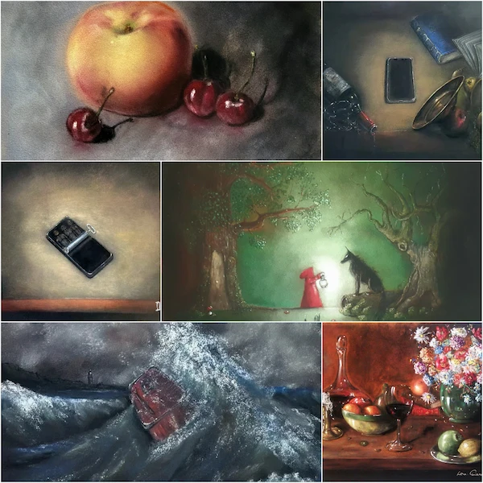
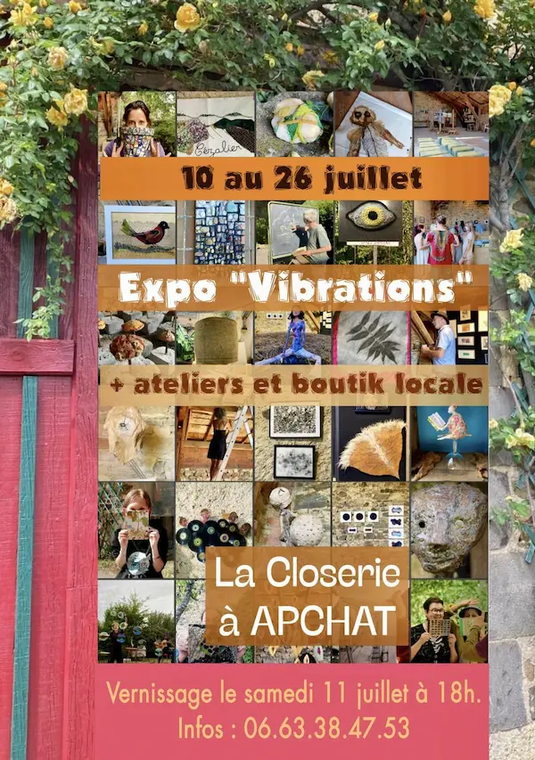

Exposition à Olmet
À l’occasion de la parution du livre Exils, une sélection d’œuvres et d’illustrations originales au pastel sec sera présentée à Olmet, dans le Puy-de-Dôme.
Dates Du 21 au 23 novembre 2026
Lieu Olmet (63)
Rencontres et événements
Retrouvez les expositions passées et à venir consacrées au travail de Daras.
À venir

À l’occasion de la parution du livre Exils, une sélection d’œuvres et d’illustrations originales au pastel sec sera présentée à Olmet, dans le Puy-de-Dôme.
Dates Du 21 au 23 novembre 2026
Lieu Olmet (63)
Archives

Cette exposition devait présenter une sélection de pastels secs autour de la lumière, du mouvement et du triptyque Le Silence des ondes.
Dates initialement prévues Du 10 au 26 juillet 2026
Lieu Apchat (63)
Propositions d’exposition
Pour toute proposition d’exposition, de collaboration ou de présentation d’œuvres, des photographies haute définition, une biographie et des informations complémentaires peuvent être mises à disposition.
Contacter l’artiste